Laura M.Principiante
★★★★★
Llegué sin experiencia y con mucho miedo. Desde la primera clase sentí que podía probar, equivocarme y descubrir algo propio. No es solo una clase de teatro: es un espacio para animarse.
Estudio de teatro
Dir. Sebastián Mogordoy · Candelaria Sesín
Desde 2010 en Buenos Aires — Desde 2020 en Barcelona · Gràcia
¡Gracias a nuestros alumnos por sus reseñas en Google! Y por la confianza, las risas, los abrazos y todo lo que vivimos… tanto en la realidad, como en la ficción.
Personas que llegaron por primera vez al teatro y actores con experiencia comparten un mismo espacio de entrenamiento, juego y creación. Clases de teatro en Barcelona para todos los niveles.
¡Viva el teatro!
Llegué sin experiencia y con mucho miedo. Desde la primera clase sentí que podía probar, equivocarme y descubrir algo propio. No es solo una clase de teatro: es un espacio para animarse.
Buscaba un taller para perder la vergüenza y terminé encontrando mucho más. El trabajo con el cuerpo, la improvisación y el grupo te llevan a lugares que no esperabas.
Como actriz necesitaba un espacio donde entrenar de verdad. El taller tiene una mirada muy concreta sobre el cuerpo, el conflicto y la escena. Hay técnica, riesgo y mucha libertad.
Es un entrenamiento exigente y muy vivo. No se trabaja desde fórmulas, sino desde el presente, la escucha y el deseo. Un lugar muy valioso para seguir investigando como actor.
Hay algo muy especial en la forma en que se construye el grupo. Cada clase abre una puerta distinta: al juego, a la imaginación, al cuerpo y a la escena.
Nunca imaginé que podría subirme a un escenario y disfrutarlo. Seba y Cande crean un ambiente donde uno se anima a todo. Recomiendo esta experiencia a cualquier persona.
Llevo dos años en el taller y sigo aprendiendo cosas nuevas cada semana. La metodología es única: parte del cuerpo y llega a lugares que la mente sola no alcanza.
Vine desde Argentina buscando un espacio serio de entrenamiento en Barcelona. Este taller superó todas mis expectativas. Es riguroso, vivo y completamente entregado al teatro.
Llegué solo queriendo probar algo nuevo y me enganchó completamente. Cada clase es diferente, sorprendente. El grupo que se forma es increíble.
Un espacio donde realmente te sientes libre de explorar. Lo que aprendo aquí lo llevo a todos los aspectos de mi vida: la presencia, la escucha, la autenticidad.
Vengo de formación académica y acá encontré algo que los conservatorios no dan: el riesgo real, la escena viva, el trabajo desde el deseo. Un entrenamiento imprescindible.
No tenía ni idea de teatro y me animé. Desde la primera clase entendí que no se trata de actuar "bien", sino de estar presente y ser honesta. Transformador.
Sebastián tiene una mirada muy singular sobre la actuación. Te enseña a desnudarte de los clichés y a encontrar algo propio. Tres años después sigo aprendiendo.
El taller me devolvió las ganas de actuar que había perdido. Cande tiene una capacidad increíble para ver lo que le pasa a cada alumno y devolvérselo. Es un lujo trabajar con ellos.
dar el salto.
Tres recorridos posibles para estudiar teatro en Barcelona: para quienes empiezan desde cero, para quienes quieren profundizar y para actores que buscan entrenamiento, presencia y lenguaje propio.
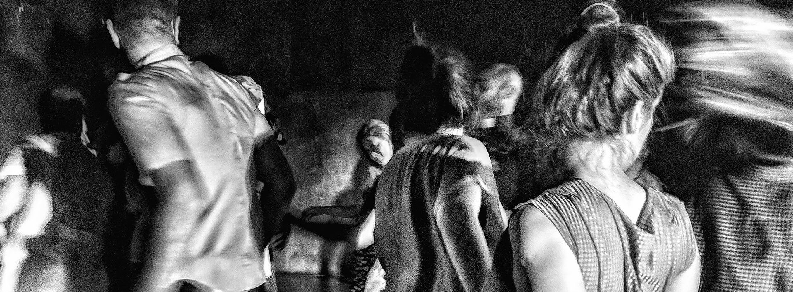
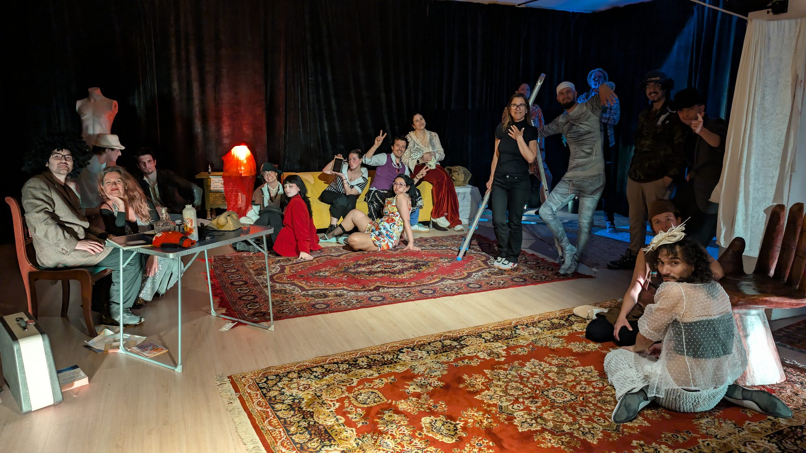
La creación del artificio. Formación.
Para personas sin experiencia previa — o con ganas de volver a jugar. Lo más importante es pasarla bien, desconectar y descubrir el placer de actuar. Improvisación, cuerpo, escucha y primeras herramientas actorales para entrar en la ficción sin miedo.
Coord. Sebastián Mogordoy · Candelaria SesínLunes / Martes / Jueves · 19 a 22h
Más info e inscripción — Principiantes →
¿Quieres estudiar por primera vez? En esta primera etapa los participantes formarán parte de un espacio diferente a los de su vida cotidiana, con otras reglas y otras posibilidades, junto a un grupo de personas de distintas edades.
Un espacio para quienes desean comenzar a actuar o volver a conectar con el juego, la imaginación y la presencia. Trabajaremos improvisación, escucha, disponibilidad, cuerpo, vínculo y primeras herramientas actorales para entrar en la ficción desde la acción y no desde la idea.
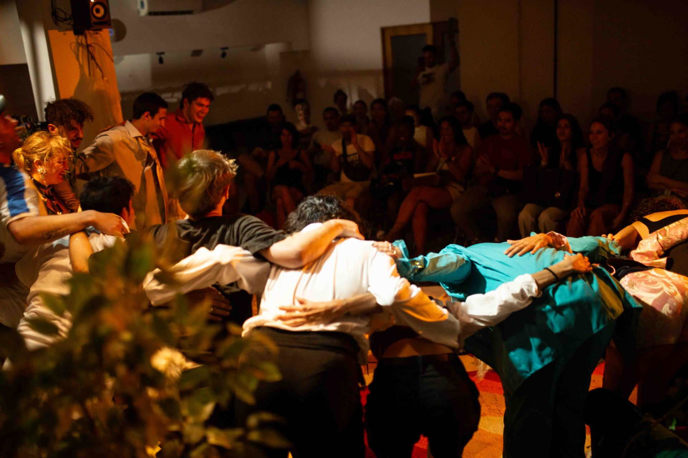
Inscribir lo propio. Entrenamiento.
Para quienes ya tienen experiencia y quieren profundizar y entrenar actuación. Personaje, presencia, deseo, conflicto y poética personal.
Coord. Sebastián Mogordoy · Candelaria SesínMiércoles · 19 a 22h
Más info e inscripción — Con experiencia →
Trabajaremos para que los participantes dominen técnicamente su herramienta y puedan comprenderse como una fuerza poética, un cuerpo dispuesto, entrenado, vibrante, que en el momento de actuar pone en juego todos sus sentidos.
Un espacio de profundización para actores y actrices que ya tuvieron un recorrido previo y desean ampliar su entrenamiento. Investigaremos escena, conflicto, presencia, deseo, imaginario y construcción de materiales actorales.
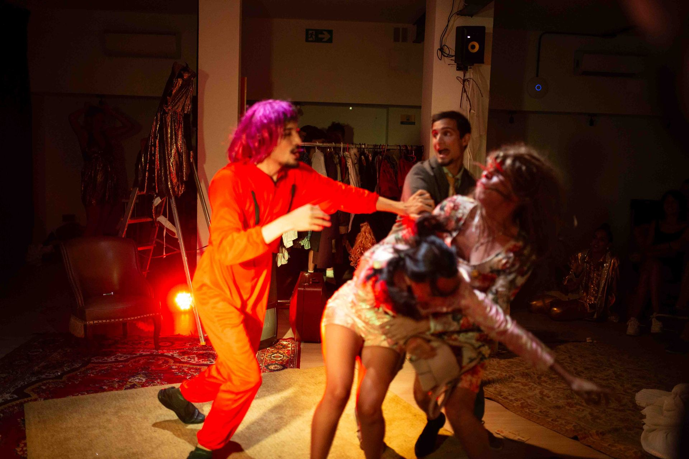
Escenas de texto — Monólogos
Exploraremos escenas y monólogos desde el cuerpo, el estado y las fuerzas invisibles que atraviesan cada situación. Texto, ritmo, sonoridad y conflicto como materia viva para actuar desde una presencia real y no desde la representación.
Coord. Sebastián MogordoyLunes · 10 a 13h
Lunes · 19 a 22h Inicio sept.
Más info e inscripción — Cuerpo al texto →
El trabajo sobre escenas de texto y monólogos estará centrado en comprender que actuar un texto no significa "decir bien" unas palabras, sino descubrir qué fuerzas lo producen.
Nos interesa entender que las palabras salen de un cuerpo atravesado por un estado — afectado, vibrando, deseando, resistiendo. El texto será abordado como materia viva: acción, impulso, respiración y comportamiento.
¿Quieres estudiar por primera vez? En esta primera etapa los participantes formarán parte de un espacio diferente a los de su vida cotidiana, con otras reglas y otras posibilidades, junto a un grupo de personas de distintas edades. La propuesta es trabajar con cada uno, desde el juego, trascendiendo a lo teatral. Que quieran darse permiso para volver a jugar, desinhibirse, perder el miedo a la exposición, dándole creencia a las situaciones de ficción y descubriendo la propia potencia expresiva. Que puedan "fracturar lo real" para alterar el cotidiano, soltando el "yo social" y dándole lugar a la escena de ficción, posibilitando un encuentro diferente con uno y los otros.
Un espacio para quienes desean comenzar a actuar o volver a conectar con el juego, la imaginación y la presencia. Trabajaremos improvisación, escucha, disponibilidad, cuerpo, vínculo y primeras herramientas actorales para entrar en la ficción desde la acción y no desde la idea. Exploraremos el entrenamiento como un territorio de libertad expresiva donde la escena aparece como experiencia viva, sensible y compartida.
Coord. Sebastián Mogordoy — Candelaria Sesin
Trabajaremos para que los participantes dominen técnicamente su herramienta y que puedan comprenderse —más que como la idea de un personaje— como una fuerza poética, un cuerpo dispuesto, entrenado, vibrante, que en el momento de actuar pone en juego todos sus sentidos y logra manejar tanto la percepción multidireccional como la radiación de su propia energía, por medio de la improvisación dirigida.
Se asimila la técnica y se afianza la poética. La actividad pide mayor compromiso y comienza a desplegar mayor complejidad y profundidad en el encuentro con la actuación. Entrenaremos y crearemos escenas para presentar a fin de ciclo ante nuestros amigos y familiares.
Un espacio de profundización para actores, actrices y estudiantes avanzados, que ya tuvieron un recorrido previo y desean ampliar su entrenamiento. Investigaremos escena, conflicto, presencia, deseo, imaginario y construcción de materiales actorales desde una búsqueda técnica y poética. El trabajo estará orientado a desarrollar una mayor complejidad expresiva, fortaleciendo la relación entre cuerpo, actuación y mirada propia dentro de la escena.
Coord. Sebastián Mogordoy — Candelaria Sesín
El trabajo sobre escenas de texto y monólogos estará centrado en comprender que actuar un texto no significa "decir bien" unas palabras, sino descubrir qué fuerzas lo producen. Analizaremos las tensiones que organizan cada situación, investigando cómo muchas veces la verdadera lógica de la escena no coincide con la lógica racional del texto escrito. La actuación aparece justamente en esa fricción.
Nos interesa entender que las palabras no salen solamente de una idea, sino de un cuerpo atravesado por un estado. Un cuerpo afectado, vibrando, deseando, resistiendo, manipulando, huyendo, necesitando algo del otro. El texto será abordado entonces como materia viva: acción, impulso, respiración y comportamiento.
Trabajaremos también sobre las dimensiones sonoras y musicales de la actuación: el ritmo interno de la escena, las velocidades, las pausas, las rupturas, la melodía de las frases, la respiración y la relación entre sonido y sentido.
La búsqueda será que cada actor pueda construir una relación orgánica y poética con el texto, alejándose de la representación ilustrativa para encontrar una actuación viva, presente y atravesada por verdaderas fuerzas escénicas.
Coord. Sebastián Mogordoy
Si nunca has actuado, ¡este es tu lugar! Nuestros grupos para principiantes están diseñados para personas sin ninguna experiencia, donde el juego y la improvisación son el punto de partida para que desarrolles tu campo imaginario.
Inspirados en grandes maestros como Raúl Serrano y Ricardo Bartís, trabajamos el cuerpo no solo como una herramienta expresiva, sino como el territorio donde se inscribe el conflicto, un lenguaje que no necesita palabras, un lugar de contradicción y verdad.
Fomentamos la desinhibición, la confianza y la creatividad. Aquí podrás darte permiso para volver a jugar, equivocarte y expandirte, alejándote del «yo social» y dar un salto al campo imaginario, donde todo lo que te imagines puede pasar.
Creemos que tu poética personal es el relato. No buscamos actores genéricos, sino liberar tu voz propia y singular, esa «fuerza expresiva» que te hace único.
Te enseñamos a activar el presente escénico, a vincularte sin guion previo y a permitir que tu cuerpo esté dispuesto al error y al hallazgo.
Los encuentros semanales de 3 horas incluyen entrenamiento colectivo, improvisación de escenas y reflexión compartida para integrar el aprendizaje.
Tenemos muchos vestuarios, zapatos, pelucas, objetos, luces para que la experiencia sea espectacular!
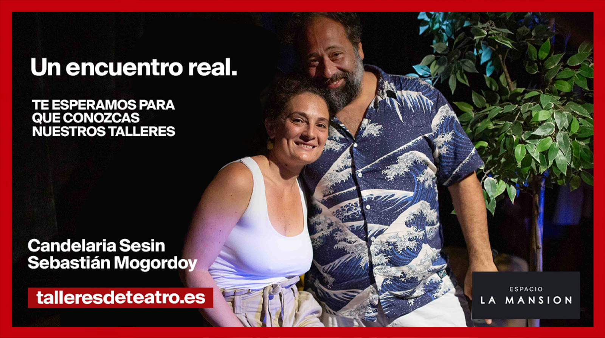
Actuar es un acto consciente, técnico, poético, lúdico y expresivo. No transmitimos contenidos: te acompañamos en tu proceso creativo.
El teatro es el territorio donde puedes ser todo eso que no eres. Un superjuego que te invita a descubrir una nueva forma de habitar el mundo, de estar con otros, de arriesgar.
Si buscas clases de teatro en Barcelona que te permitan explorar tu creatividad, conectar con tu cuerpo y transformar tu potencial expresivo — has llegado al lugar indicado.
Artículos sobre actuación, cuerpo, imagen y proceso creativo.
Preguntas sobre los conceptos del entrenamiento: presencia, imagen, cuerpo, improvisación. Para saber qué sabés, y qué todavía no.
Ir a cuestionarios →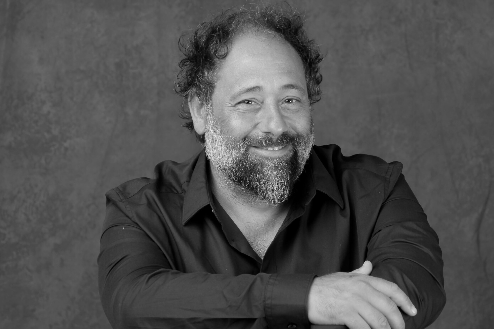
Coord. General · Profesor
Actualmente forma parte del elenco protagónico de El Fill, de Jon Fosse, dirigida por Ferran Utzet, estrenada en el Teatre Lliure. La obra participó del Festival Internacional de Buenos Aires y se estrenó en la Sala Beckett. Recientemente formó parte del elenco de la película El profesor, producida por Netflix.
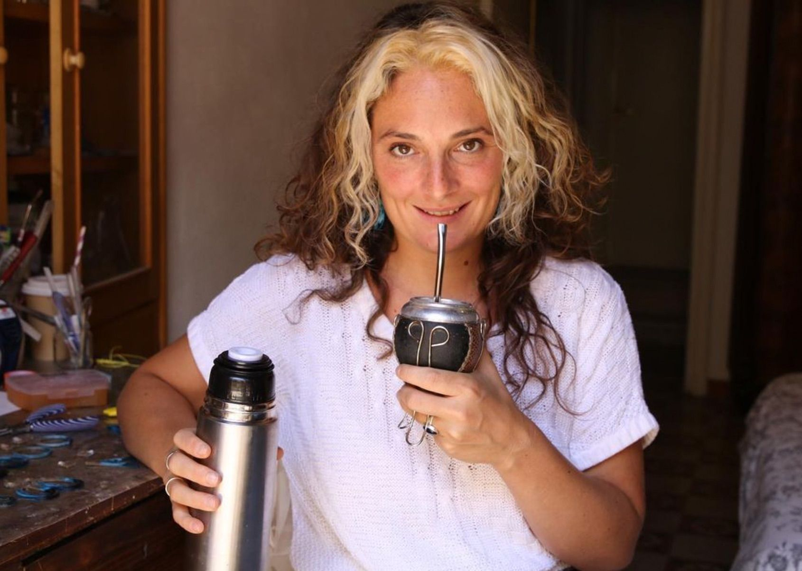
Profesora
Actriz, gestora cultural y docente de teatro. Coordinó las actividades del teatro Silencio de Negras y creó junto a varios grupos diferentes ciclos: Enredadera en la librería La Libre, Derrapé en Sala de Máquinas, Circuito Lumínico y Lo que dura una canción. Docente en Buenos Aires y Barcelona.
Coord. General · Profesor
Actualmente forma parte del elenco protagónico de El Fill, de Jon Fosse, dirigida por Ferran Utzet, estrenada en el Teatre Lliure. La obra participó del Festival Internacional de Buenos Aires y se estrenó en la Sala Beckett. Recientemente formó parte del elenco de la película El profesor, producida por Netflix.
@sebamogordoyProfesora
Actriz, gestora cultural y docente de teatro. Coordinó las actividades del teatro Silencio de Negras y creó junto a varios grupos diferentes ciclos: Enredadera en la librería La Libre, Derrapé en Sala de Máquinas, Circuito Lumínico y Lo que dura una canción. Docente en Buenos Aires y Barcelona.
@candelariasesinComenzamos en el año 2010 con 8 inolvidables alumnas en el Camarín de las Musas. Hoy seguimos haciendo y pensando el teatro que nos gusta.
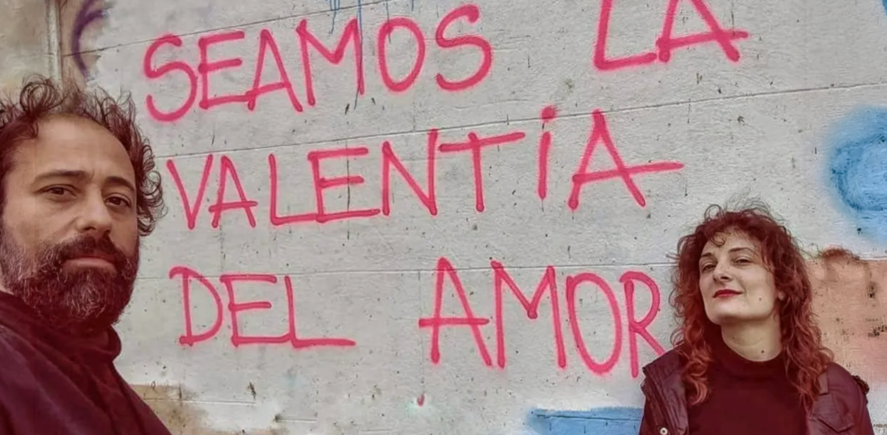
En un mundo donde la realidad nos empuja a sobrevivir en medio de diferentes guerras, el teatro sigue siendo nuestra trinchera, nuestro refugio, lugar de expresión, experimentación e investigación, de lo humano y del proceso creativo.
Cuando la vida se pone un poco aburrida o demasiado agresiva, el teatro nos propone intensidades poéticas y expresivas que nos hacen soltar la representación "del personaje que somos en la vida" para arrojarnos en un no saber que nos abre a otras posibilidades de existencia, expandiendo nuestra experiencia, habitando fuerzas y situaciones que no nos son propias. Nos invita a ser todo eso que no somos.
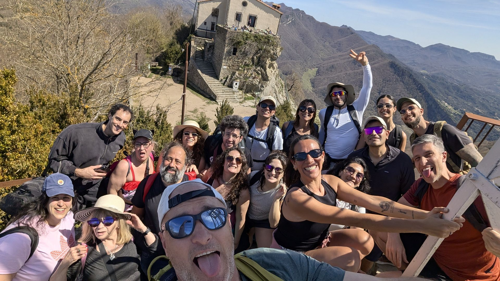
Una clase de prueba,
sin cargo.
Barcelona es una ciudad vibrante, llena de personas de diversas edades, costumbres y nacionalidades. Cultivamos un espacio de creación, encuentro real, expresión y construcción social. Además de desarrollar tu trabajo actoral, conocés gente, compartís y creás con tus compañeros. Las clases se transforman en una experiencia acumulativa de risas, logros y amistades.
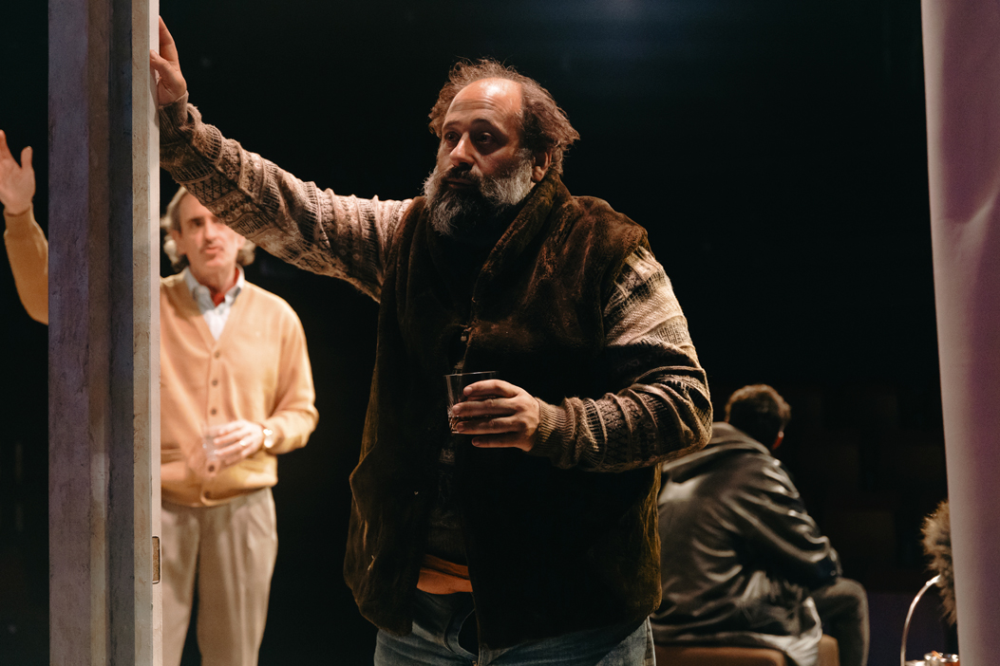
Sebastián Mogordoy forma parte del elenco protagónico de El Fill, de Jon Fosse, dirigida por Ferran Utzet. Estrenada en el Teatre Lliure de Barcelona.
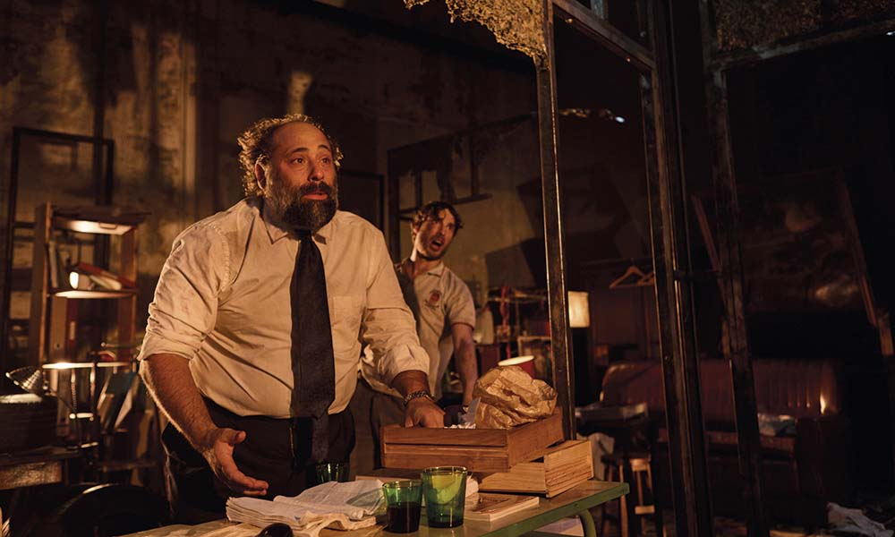
Sebastián Mogordoy forma parte del elenco protagónico. Dirigida por Sergio Boris. Estrenada en el Festival Temporada Alta 2024. Temporada en la Sala Beckett, Obrador Internacional de Dramaturgia. Teatros del Canal, Madrid, 2025/26.
"Boris plantea una actuación en la que se juega con el descontrol, con un teatro donde la actuación siempre está en riesgo. Punto y aparte para Mogordoy que es de otro planeta." — Pablo Caruana Húder · elDiario.es →
No. El taller de principiantes está diseñado para personas que se acercan al teatro por primera vez, o que quieren volver a conectar con el juego y la escena después de años. El punto de partida es la curiosidad y las ganas de explorar. No hace falta saber nada de antemano.
Sí. El taller de intermedios (Con experiencia) está pensado exactamente para eso: actores, actrices y estudiantes avanzados que ya tienen un recorrido y quieren profundizar en técnica, presencia, conflicto y construcción de una poética propia. También ofrecemos el nivel Cuerpo al texto, centrado en escenas y monólogos para actores con formación sólida.
Cada encuentro dura 3 horas. Combinamos entrenamiento físico y vocal, improvisación de escenas y reflexión compartida sobre el trabajo. La metodología parte del cuerpo, el presente escénico y el vínculo entre los participantes. No trabajamos desde fórmulas, sino desde el aquí y ahora de la escena.
Sí. Ofrecemos una primera clase de prueba sin cargo para que puedas vivir la experiencia antes de comprometerte. Solo escríbenos por WhatsApp o email y te sumamos a la próxima sesión disponible.
Los grupos de principiantes abren en septiembre, enero y junio según la demanda. El próximo grupo arranca en junio 2026. Los niveles intermedios y avanzados tienen incorporación continua cuando hay plazas disponibles. Consúltanos por WhatsApp para saber el estado actual de cada grupo.
Las clases se realizan en el Espacio La Mansión, en Carrer de Roger de Flor, 253, Local 2 y 3, barrio de Gràcia, Barcelona (08025). Es un espacio amplio con escenario, vestuario, luces y todos los recursos necesarios para el entrenamiento actoral.
Los talleres están abiertos a adultos de todas las edades. Conviven personas de perfiles muy distintos: estudiantes, profesionales, jubilados, actores en activo y personas que nunca han pisado un escenario. La diversidad de edades y experiencias enriquece el trabajo de grupo.
La cuota mensual incluye todos los encuentros del mes. Escríbenos para saber el detalle de precios actualizados y las opciones disponibles. La primera clase es siempre gratuita.
La improvisación dirigida es el eje central de todos los talleres. En el nivel avanzado Cuerpo al texto trabajamos específicamente sobre escenas y monólogos, abordando el texto como materia viva: acción, impulso, respiración y comportamiento, no como recitación de palabras. En todos los niveles el cuerpo y el presente escénico son el punto de partida.
Es una escuela de teatro con estructura de tres niveles de formación continua. Usamos la palabra "talleres" porque describe el formato de trabajo práctico y colectivo, pero el proyecto es una escuela de teatro completa: con currículum propio, metodología definida, niveles de progresión y formación sostenida a lo largo del año. No son clases sueltas ni workshops puntuales.
Ofrecemos dos niveles específicos para actores con formación previa. El nivel Con experiencia está pensado para actores, actrices y estudiantes avanzados que quieren profundizar en presencia escénica, poética personal y construcción de material propio. El nivel Cuerpo al texto es para actores formados que quieren investigar el trabajo sobre texto dramático, monólogo y escena con un enfoque técnico y poético riguroso. La incorporación a este último nivel es por entrevista y las plazas son muy limitadas.
La escuela tiene tres niveles de formación actoral: Principiantes (La creación del artificio), para personas sin experiencia previa; Con experiencia (Inscribir lo propio), para actores y personas con recorrido teatral que buscan profundizar su lenguaje; y Cuerpo al texto, un espacio de investigación avanzada sobre texto, voz y poética escénica para actores formados. Todos los niveles son presenciales, 3 horas semanales, en el Espacio La Mansión, Gràcia, Barcelona.
Sí. El nivel Cuerpo al texto está diseñado para actores y actrices con trayectoria escénica que quieren seguir entrenando y profundizando su trabajo. Es un espacio de investigación continua: se trabaja sobre texto dramático, monólogo, voz y la construcción de una poética personal. El coordinador, Sebastián Mogordoy, trabaja actualmente en el Teatre Lliure y en producciones de Netflix, lo que garantiza un enfoque conectado con la práctica profesional real. La incorporación es por entrevista.
La metodología se basa en la tradición del teatro argentino contemporáneo, especialmente el trabajo de Ricardo Bartís en el Sportivo Teatral de Buenos Aires, con quien se formó el director Sebastián Mogordoy. El eje central es la improvisación dirigida: no libre ni espontánea, sino estructurada, con rigor y dirección. El cuerpo, la presencia y el acto son el punto de partida, no el personaje ni el texto como guión. Esta pedagogía forma parte de una corriente que influye en la formación actoral de referencia en Argentina y que tiene cada vez más presencia en Europa.
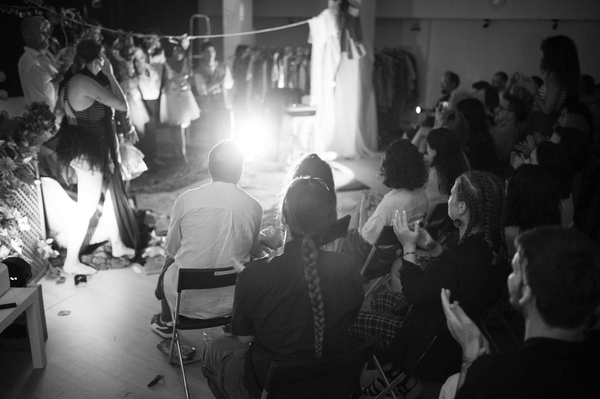
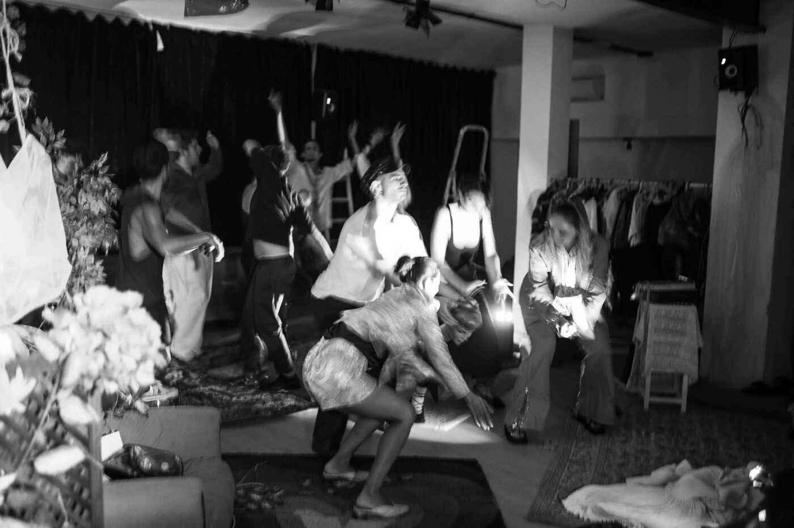
A todos ❤️ los de hoy y los de siempre,
todos juntos, siempre es hoy.